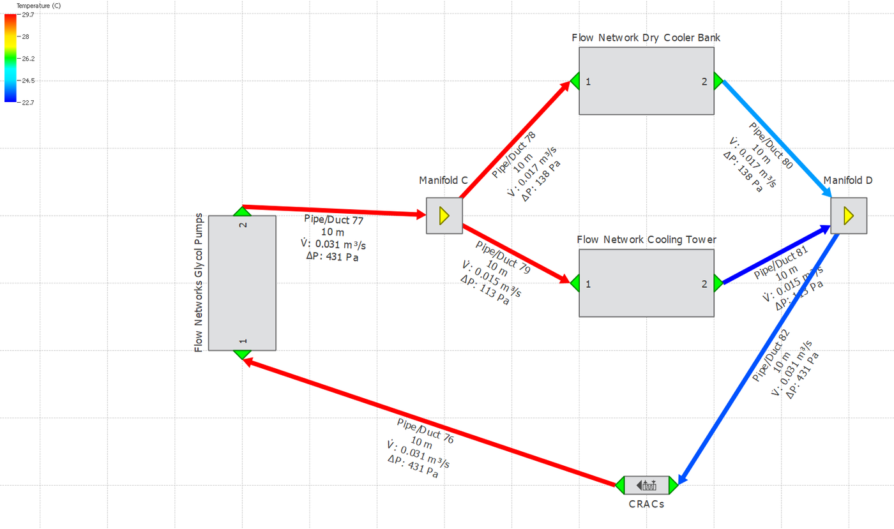

Mehmet Bacaksizlar
Berkeley, CA
←

Source Material 1
— The converged Warren Hall glycol loop in Cadence Reality DC Design, with the glycol pumps, the dry cooler bank, the cooling tower branch, and the 800 kW load.